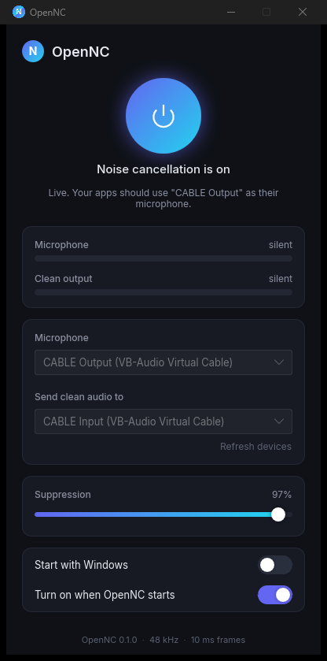

Noise cancellation that is yours.
Open-source, real-time, on your machine. Press one button and Discord, Zoom, Teams, OBS and every other app hear a clean voice.
Download for WindowsFree, Apache 2.0. No account, no cloud. Source on GitHub.

An open model
Trained from scratch on open data, with the full training pipeline and benchmarks published. Nothing proprietary inside.
Real time
10 ms frames, about 1 ms of CPU per frame on one core, around 50 ms from microphone to your apps.
Works everywhere
Clean audio goes into a virtual microphone, so any app that can pick a microphone can use it.
Stays out of the way
Lives in the tray, starts with Windows, resumes when your headset comes back, updates itself.
Set up in a minute
- Install OpenNC from the download above.
- Install VB-Cable (free). OpenNC offers the download if it is missing.
- Pick your microphone in OpenNC and press the power button.
- In your apps, choose
CABLE Outputas the microphone.
How it works
OpenNC runs a DeepFilterNet3-family network with 8.2 million parameters at 48 kHz with no lookahead. The weights, the training recipe and honest benchmarks against DeepFilterNet 2 and 3 on VoiceBank-DEMAND and the DNS Challenge 5 recordings are in the OpenNC model repository. The desktop app is Rust: Slint for the interface, cpal for audio, onnxruntime for the model.